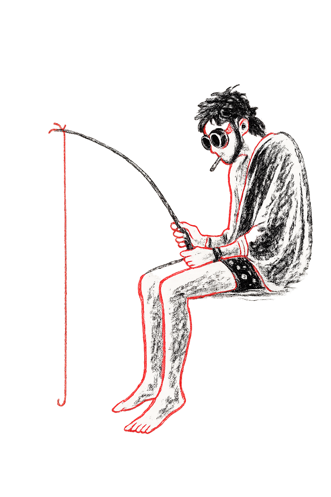

외로움
현대 사회는 그 어느 때보다 사람들과 쉽게 연결될 수 있는 시대다. 스마트폰 하나만 있으면 언제든 누군가와 연락할 수 있고, SNS를 통해 수많은 사람들의 일상을 실시간으로 볼 수 있다. 그러나 연결 수단이 늘어난 만큼 외로움이 줄어든 것은 아니다. 오히려 많은 청년들은 관계 속에 있으면서도 외로움을 경험하고 있다.
실제로 외로움은 청년 우울의 가장 강력한 원인 중 하나로 나타난다. KBS가 건강보험심사평가원 자료를 분석한 결과, 청년기 우울증 환자는 10년 사이 225% 증가했다. 또한 배성만 단국대학교 교수의 연구에 따르면 사회적 고립과 외로움은 우울증과 높은 상관관계를 보였으며, 그중에서도 외로움이 가장 강한 영향을 미치는 요인으로 확인되었다.
외로움은 단순히 주변에 사람이 없는 상태를 의미하지 않는다. 사람은 가족, 친구, 연인과 같은 소중한 관계 안에서 이해받고 공감받기를 기대한다. 그러나 이러한 기대가 충족되지 않을 때 외로움이 발생한다. 가까운 사람과 함께 있어도 자신의 감정을 이해받지 못한다고 느끼는 순간, 사람은 깊은 고립감을 경험한다.
특히 청년 세대는 외로움을 무력감과 공허함으로 인식하는 경향이 강하다. 외로움을 느낄 때 사람들은 자신이 소외되었다고 생각하고, 점차 자신의 존재 가치에 의문을 품게 된다. 홍익대학교 연구팀은 외로움이 심할수록 부정적인 생각을 반복하는 반추가 증가하며, 이는 우울증의 심각도와도 연결된다고 밝혔다. 결국 외로움은 단순한 감정이 아니라 우울을 증폭시키는 심리적 환경이 되는 것이다.
이러한 문제는 개인의 감정을 넘어 사회적 현상으로도 나타난다. 우리나라에서는 사회와의 관계를 단절한 채 살아가는 고립·은둔 청년이 수십만 명 규모로 추정되고 있다. 사람들과 관계를 맺는 것 자체가 부담이 되고, 상처받을 가능성을 피하기 위해 스스로 연결을 끊는 것이다. 그러나 관계를 피할수록 외로움은 더욱 깊어지고, 외로움은 다시 우울과 고립을 만들어내는 악순환을 반복한다.
결국 외로움은 누군가가 곁에 없는 문제가 아니라, 마음이 연결되지 못하는 문제다. 비교와 경쟁, 불안이 일상이 된 사회 속에서 청년들은 점점 더 많은 사람들과 함께 있으면서도 더 깊은 외로움을 경험하고 있다. 그리고 그 외로움은 오늘날 청년 우울을 설명하는 중요한 원인 중 하나가 되고 있다.